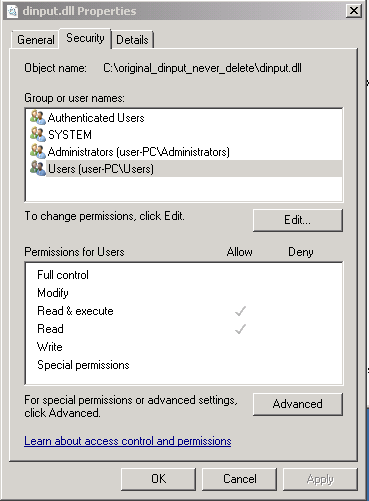
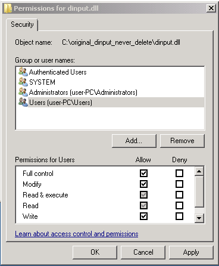

Windows Input Injectors HelpIntroductionWindows Input Injectors are required to automate applications that use DirectX and/or LowLevelInput on Windows.Automated DLL InstallationThe Automated DLL Installation interface starts automatically if the DLLs are not installed or manually installed. The Results field must display INSTALLED before the dependent modules will run.What do I do if it causes an application to work incorrectly? Uninstall if an application does not work when INSTALLED. Not uninstalling will disable the modules depending on these input injectors, but will allow incompatible applications to function. What should I do if installation fails? Important: Set the dinput.dll and dinput8.dll to have write permissions. This usually causes installation failure on Vista only. Some help on this is provided below. If you are sure that the permissions are set correctly and you restarted that InputAutomationToo and tried the installation again and it still failed then you will need manually install the DLLs. Checking File PermissionsRight clicking on a file or directory and selecting properties should display its permissions. The example below shows the properties before they are changed on Vista for the user running the Automated DLL Installer. Click on edit to change the file permissions. Note that you must also be the owner to change the permissions. You can set yourself as the owner using the advanced button displayed above. Setting File PermissionsDinput.dll, Dinput8.dll, and the System32 directory must have write access for the user running the automated installer as shown below: Please see your Operating System help for specifics on changing permissions. Manual DLL Installation (Only use if Automated DLL Installation Fails)You must have write privilages
to the system32 directory (Permission changes only needed for Vista). 1. Unload any programs that use
DirectX. <INSTALL
DIRECTORY>\InputAutomation\Windows\<Operating System> into c:\[Windows Path]\System32\ Example: For XP the dlls would
be in: <INSTALL DIRECTORY>\InputAutomation\Windows\XP 7. Renamed the newly copied
dinput files by removing the .ia extension. System Injector Installation
(Vista Only)
|